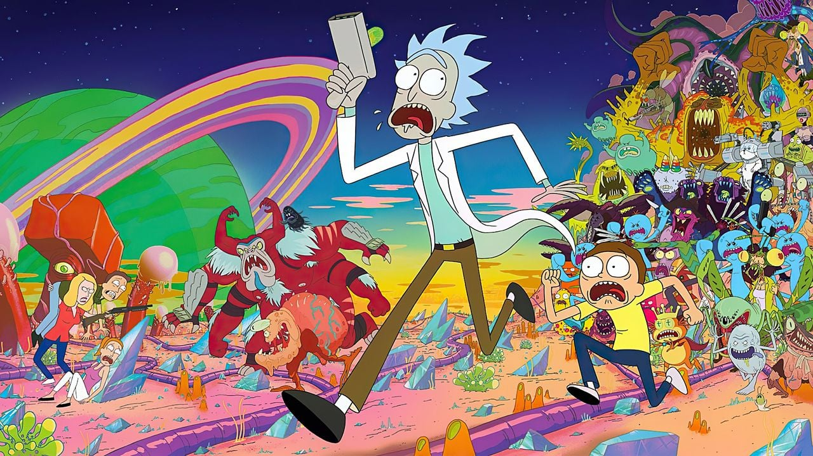

ANA SAYFA
| DİZİ ADI | YAYINLANMA TARİHİ | SEZON SAYISI | IMBD PUANI |
| Rick And Morty | 2013 - | 7 + | 9.1 |
| Attack On Titan | 2013- 2023 | 4 | 9.1 |
| Arcane | 2021 - 2024 | 2 | 9.0 |
| Death Note | 2007- 2008 | 1 | 8.9 |
| BoJack Horseman | 2014 - 2020 | 6 | 8.8 |

Rick and Morty, bilim kurgu, komedi ve macera unsurlarını bir araya getiren animasyon dizisidir. Başrolünde, dahi ama bir o kadar da sorumsuz bilim insanı Rick ve onun torunu Morty yer alır. Bu ikili, evrenin dört bir yanındaki farklı boyutlara ve tehlikeli dünyalara giderek kaotik maceralara atılırlar. Dizi mizahi yönü, karanlık temaları ve sürükleyici hikayesiyle izleyiciyi içine çeker. Rick ve Morty'nin tehlikeli yolculukları, insanlık halleri, aile bağları ve etik sorular gibi derin konuları eğlenceli bir şekilde izleyiciye sunar. Rick and Morty, sıradan bir animasyon dizisinin ötesine geçerek, hem komik hem de düşündürücü bir deneyim sunar.Ve bizim öneri listemizin başında yer alır.